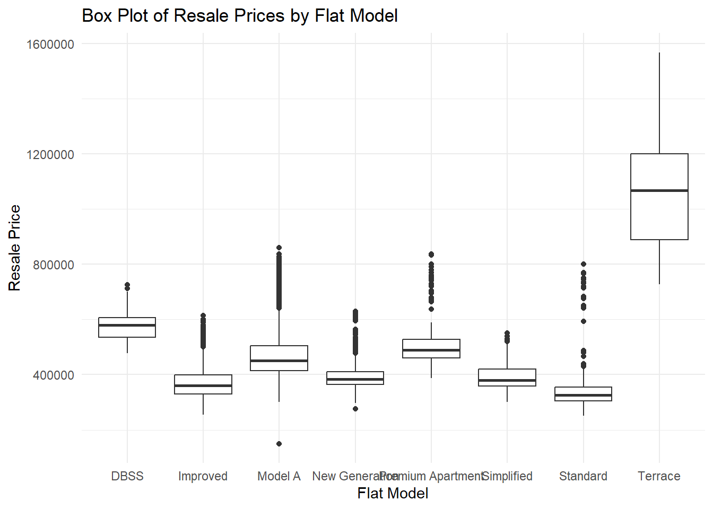

pacman::p_load(rvest,jsonlite ,sf, SpatialML, tmap, Metrics, tidyverse, ggplot2, olsrr)Take-home Exercise 3: Preparing HDB data for Geographically Weighted Predictive Model
1 Overview
1.1 Setting the Scene
Housing is a crucial part of household wealth globally and often represents a major investment. Housing prices are influenced by global factors, like a country’s economy and inflation, as well as property-specific factors that can be divided into structural and locational categories. Structural factors relate to the property itself, such as size, fittings, and tenure, while locational factors pertain to neighborhood characteristics like proximity to childcare centers, public transportation, and shopping centers.
Traditionally, predictive models for housing resale prices have used the Ordinary Least Square (OLS) method. However, this approach does not account for spatial autocorrelation and spatial heterogeneity present in geographic datasets like housing transactions, potentially leading to biased or inefficient predictions (Anselin 1998). To address these limitations, Geographically Weighted Models (GWM) were introduced, offering more accurate calibrations for housing price predictions.
1.2 Objective
This study will calibrate both non-spatial and spatially weighted predictive models to forecast Singapore HDB resale prices for July-September 2024, using 2023 HDB resale transaction records. We will compare the derived models and their performances to understand the differences between conventional and spatially weighted predictive models.
1.3 The Data
For this study, the HDB Resale Flat Prices dataset from Data.gov.sg will be used as the core dataset.
The below datasets are also included to derive the recommended predictors for calibrating the models:
MRT (Train Station Exit Point shapefile, updated June 2024), Bus Stop (updated July 2024): LTA DataMall
Eldercare, Hawker Centres, Parks, Supermarkets, CHAS Clinics, Childcare Services, Kindergartens: Geojson/shapefile data from Data.gov.sg.
Shopping mall: list from Wikipedia
Primary school: csv list from Data.gov.sg (General information of schools dataset)
Top school by popularity in 2024: as of Local salary forum
The recommended predictors include both structural and location related factors:
Structural factors
Area of the unit
Floor level
Remaining lease
Age of the unit
Flat model
Locational factors
Proxomity to CBD
Proximity to eldercare
Proximity to foodcourt/hawker centres
Proximity to MRT
Proximity to park
Proximity to good primary school
Proximity to shopping mall
Proximity to supermarket
Numbers of kindergartens within 350m
Numbers of childcare centres within 350m
Numbers of bus stop within 350m
Numbers of primary school within 1km
2 Import R Packages
The below code chunk uses p_load() of pacman package to install and load relevant packages into R environment.
rvest: use for web crawling
jsonlite: to convert json file to dataframe format
sf: Simplifies handling and analysis of spatial vector data using simple features.
SpatialML: Integrates spatial machine learning for predictive modeling with spatial data.
tmap: Creates thematic maps for spatial data with interactive and static plotting.
Metrics: Offers a suite of standard performance metrics for evaluating predictive models.
tidyverse: A collection of packages for data manipulation, exploration, and visualization.
ggplot2: Provides a flexible, grammar-based approach to create complex visualizations.
olsrr: Provide tools for OLS regression.
3 Import Geospatial and Aspatial Data
3.1 Import Aspatial Data
3.1.1 HDB Resale Transactions
First we load in the Resale transactions from January 2023 to December 2023 and from July 2024 to September 2024 in resale.csv into R environment using the below functions:
read_csv(): to read in csv filefilter(): to filter for the relevant months
resale_raw <- read_csv("data/rawdata/resale.csv") %>%
filter(month >= "2023-01" & month <= "2023-12" | month >= "2024-07" & month <= "2024-09")Rows: 192234 Columns: 11
── Column specification ────────────────────────────────────────────────────────
Delimiter: ","
chr (8): month, town, flat_type, block, street_name, storey_range, flat_mode...
dbl (3): floor_area_sqm, lease_commence_date, resale_price
ℹ Use `spec()` to retrieve the full column specification for this data.
ℹ Specify the column types or set `show_col_types = FALSE` to quiet this message.As flats with different number of rooms tend to have very different price range, we plot multiple box plots to visualize the price range of different room types using ggplot functions as in the below code chunk.
# Create box plot of resale_price by flat_type
ggplot(resale_raw, aes(x = flat_type, y = resale_price)) +
geom_boxplot() +
labs(
title = "Box Plot of Resale Prices by Flat Type",
x = "Flat Type",
y = "Resale Price"
) +
theme_minimal()The box plots show that resale price range increase with flat size. The price range is especially wider for flat type with 3 ROOM, 4 ROOM and 5 ROOM, with 3 ROOM having the widest range.
Next we plot the number of transactions for each flat type.
# Create a column chart for the number of transactions by flat_type
ggplot(resale_raw, aes(x = flat_type)) +
geom_bar(fill = "skyblue", color = "black") +
labs(
title = "Number of Transactions by Flat Type",
x = "Flat Type",
y = "Number of Transactions"
) +
theme_minimal()The column chart indicates that 4-room flats had the highest transaction volume during the selected period, nearing 15,000 transactions, while both 3-room and 5-room flats recorded over 7,500 transactions each. Given that each flat type has a distinct price range, this study will focus on 3-room flats due to their higher price variability. This variability poses a challenge for prediction, offering a way to distinguish model performance. This flat type also has sufficient number of records to calibrate predictive models.
The below code create additional attributes and filter for flat_type = 3 ROOM using the below functions. The output is saved in resale_tidy tibble dataframe.
filter(): filter for flat_type == 3 ROOMmutate(): create new columns on:address: using paste() to concatenate block and street nameremaining_lease_yr: extract the number of years as integer from remaining_lease columnremaining_lease_mth: extract the number of months as integer from remaining_lease column. Return 0 if the number of months is not provided.remaining_lease_yrs: total remaining lease in years (= remaining_lease_yr + remaining_lease_mth/12)storey_order: extract the first number from storey_rangeunit_age: = current year - lease commencement date
select(): to select relevant columns
current_year = 2024
resale_tidy <- resale_raw %>%
filter(flat_type == "3 ROOM") |>
mutate(address = paste(block,street_name)) %>%
mutate(remaining_lease_yr = as.integer(
str_sub(remaining_lease, 0, 2)))%>%
mutate(remaining_lease_mth = if_else(
is.na(as.integer(str_sub(remaining_lease, 9, 11))),0,
as.integer(str_sub(remaining_lease, 9, 11)) # to handle cases where there are no month value
)) |>
mutate(remaining_lease_yrs = remaining_lease_yr + remaining_lease_mth/12) |>
mutate(storey_order = as.integer(
str_sub(storey_range, 0, 2))) |>
mutate(unit_age = 2024 - lease_commence_date ) |>
select(c("address","month","flat_model","floor_area_sqm","resale_price","remaining_lease_yrs","storey_order","unit_age"))Next we use summary() of base R to have an overview of resale_tidy.
summary(resale_tidy) address month flat_model floor_area_sqm
Length:8264 Length:8264 Length:8264 Min. : 52.00
Class :character Class :character Class :character 1st Qu.: 66.00
Mode :character Mode :character Mode :character Median : 67.00
Mean : 68.13
3rd Qu.: 69.00
Max. :366.70
resale_price remaining_lease_yrs storey_order unit_age
Min. : 150000 Min. :41.42 Min. : 1.000 Min. : 4.00
1st Qu.: 362000 1st Qu.:53.50 1st Qu.: 4.000 1st Qu.:13.00
Median : 400000 Median :59.58 Median : 7.000 Median :40.00
Mean : 419939 Mean :65.14 Mean : 7.078 Mean :34.64
3rd Qu.: 450000 3rd Qu.:86.44 3rd Qu.:10.000 3rd Qu.:46.00
Max. :1568000 Max. :95.50 Max. :40.000 Max. :58.00 The output shows this dataframe contains 8264 records, with no column having records with NA values. NA values can cause issue when running predictive modelling later. We proceed with this dataset for further analysis.
Next we extract the list of unique addresses from resale_tidy to scrape for the respective coordinates from OneMap API. The list is sorted to ensure the first address is always picked up and hence the scraping process is optimal. The output is saved in add_list
add_list <- sort(unique(resale_tidy$address))The below get_coords function reads in any address list and return the respective postal code, longitude and latitude in a dataframe.
Show the code
get_coords <- function(add_list){
# Create a data frame to store all retrieved coordinates
postal_coords <- data.frame()
for (i in add_list){
#print(i)
# as the API provided code for 1 address search at a time only, for pasrsing a list of addresses we use the common/elastic/search syntax as below
r <- GET('https://www.onemap.gov.sg/api/common/elastic/search?',
query=list(searchVal=i,
returnGeom='Y',
getAddrDetails='Y'))
data <- fromJSON(rawToChar(r$content))
found <- data$found
res <- data$results
# Create a new data frame for each address
new_row <- data.frame()
# If single result, append
if (found == 1){
postal <- res$POSTAL
lat <- res$LATITUDE
lng <- res$LONGITUDE
new_row <- data.frame(address= i,
postal = postal,
latitude = lat,
longitude = lng)
}
# If multiple results, drop NIL and append top 1
else if (found > 1){
# Remove those with NIL as postal
res_sub <- res[res$POSTAL != "NIL", ]
# Set as NA first if no Postal
if (nrow(res_sub) == 0) {
new_row <- data.frame(address= i,
postal = NA,
latitude = NA,
longitude = NA)
}
else{
top1 <- head(res_sub, n = 1)
postal <- top1$POSTAL
lat <- top1$LATITUDE
lng <- top1$LONGITUDE
new_row <- data.frame(address= i,
postal = postal,
latitude = lat,
longitude = lng)
}
}
else {
new_row <- data.frame(address= i,
postal = NA,
latitude = NA,
longitude = NA)
}
# Add the row
postal_coords <- rbind(postal_coords, new_row)
}
return(postal_coords)
}We run the get_coords() function on add_list to retrieve the addresses’ coordinates from OneMap API. The result is saved in coords dataframe.
coords <- get_coords(add_list)We write the result coordinates to rds file format using below code chunk.
write_rds(coords, "data/rds/coords.rds")The below code chunk read the HDB block coordinates from rds file into block_coords dataframe.
block_coords = read_rds("data/rds/coords.rds")Next we convert resale_tidy into an sf dataframe resale using the below functions:
left_join(): joinresale_tidytibble data frame withblock_coordson theaddresscolumnst_as_sf(): convert into an sf dataframe using CRS 4326 as the obtained longitude and latitude is in WGS84 coordinates system.st_transform(): reproject the coordinates to Singapore projected CRS SVY21select(): exclude columnpostalsince it is not needed in the remaining steps.
resale <- resale_tidy |>
left_join(block_coords, by = "address") |>
st_as_sf(coords = c("longitude", "latitude"),
crs=4326) |>
st_transform(crs = 3414) |>
select(-c("postal"))The code chunk below converts block_coords to an sf data frame called hdb_coords to derive other geospatial attributes of HDB block (proximity to other amenities, number of amenities within close distance to the block). The below functions are used:
st_as_sf(): convert into an sf dataframe using CRS 4326 as the obtained longitude and latitude is in WGS84 coordinates system.st_transform(): reproject the coordinates to Singapore projected CRS SVY21select(): exclude columnpostalsince it is not needed in the remaining steps.
hdb_coords = block_coords |>
st_as_sf(coords = c("longitude", "latitude"),
crs=4326) |>
st_transform(crs = 3414) |>
select(-c("postal"))3.2 Import Geospatial Data
The below code chunk imports Singapore Planning Subzone boundary to mpsz sf dataframe using the below functions:
st_read(): to read in shapefilest_transform(): to ensure the coordinates are transforms to the correct CRS 3414 of Singapore Projected Coordinate System SVY21.
mpsz = st_read(dsn = "data/rawdata",
layer = "MP14_SUBZONE_WEB_PL") |>
st_transform(crs = 3414)Reading layer `MP14_SUBZONE_WEB_PL' from data source
`C:\thuphuong1110\ISSS626-GAA\Take-home_Ex\Take-home_Ex03\data\rawdata'
using driver `ESRI Shapefile'
Simple feature collection with 323 features and 15 fields
Geometry type: MULTIPOLYGON
Dimension: XY
Bounding box: xmin: 2667.538 ymin: 15748.72 xmax: 56396.44 ymax: 50256.33
Projected CRS: SVY21The below code chunks read in the eldercare shapefile as downloaded from Data.gov.sg using st_read(). After that st_transform() is used to reproject the coordinates to CRS 3414 of Singapore Projected CRS SVY21.
eldercare = st_read(dsn = 'data/rawdata',
layer = 'ELDERCARE') |>
st_transform(crs = 3414)Reading layer `ELDERCARE' from data source
`C:\thuphuong1110\ISSS626-GAA\Take-home_Ex\Take-home_Ex03\data\rawdata'
using driver `ESRI Shapefile'
Simple feature collection with 133 features and 18 fields
Geometry type: POINT
Dimension: XY
Bounding box: xmin: 14481.92 ymin: 28218.43 xmax: 41665.14 ymax: 46804.9
Projected CRS: SVY21The below code chunks read in the CHAS clinics shapefile as downloaded from Data.gov.sg using st_read(). After that st_transform() is used to reproject the coordinates to CRS 3414 of Singapore Projected CRS SVY21. As the POINT features are given in 3 dimension XYZ, we use st_zm() to drop dimension Z as it is not required in the remaining steps.
CHAS = st_read('data/rawdata/CHASClinics.kml') |>
st_transform(crs = 3414) |>
st_zm(drop = TRUE, what = "ZM")Reading layer `MOH_CHAS_CLINICS' from data source
`C:\thuphuong1110\ISSS626-GAA\Take-home_Ex\Take-home_Ex03\data\rawdata\CHASClinics.kml'
using driver `KML'
Simple feature collection with 1193 features and 2 fields
Geometry type: POINT
Dimension: XYZ
Bounding box: xmin: 103.5818 ymin: 1.016264 xmax: 103.9903 ymax: 1.456037
z_range: zmin: 0 zmax: 0
Geodetic CRS: WGS 84The below code chunks read in the Hawker geojson file as downloaded from Data.gov.sg using st_read(). After that st_transform() is used to reproject the coordinates to CRS 3414 of Singapore Projected CRS SVY21. As the POINT features are given in 3 dimension XYZ, we use st_zm() to drop dimension Z as it is not required in the remaining steps.
hawker = st_read('data/rawdata/HawkerCentresGEOJSON.geojson') |>
st_transform(crs = 3414) |>
st_zm(drop = TRUE, what = "ZM")Reading layer `HawkerCentresGEOJSON' from data source
`C:\thuphuong1110\ISSS626-GAA\Take-home_Ex\Take-home_Ex03\data\rawdata\HawkerCentresGEOJSON.geojson'
using driver `GeoJSON'
Simple feature collection with 125 features and 2 fields
Geometry type: POINT
Dimension: XYZ
Bounding box: xmin: 103.6974 ymin: 1.272716 xmax: 103.9882 ymax: 1.449017
z_range: zmin: 0 zmax: 0
Geodetic CRS: WGS 84The below code chunks read in the Parks geojson file as downloaded from Data.gov.sg using st_read(). After that st_transform() is used to reproject the coordinates to CRS 3414 of Singapore Projected CRS SVY21. As the POINT features are given in 3 dimension XYZ, we use st_zm() to drop dimension Z as it is not required in the remaining steps.
parks = st_read('data/rawdata/Parks.geojson') |>
st_transform(crs = 3414)|>
st_zm(drop = TRUE, what = "ZM")Reading layer `Parks' from data source
`C:\thuphuong1110\ISSS626-GAA\Take-home_Ex\Take-home_Ex03\data\rawdata\Parks.geojson'
using driver `GeoJSON'
Simple feature collection with 430 features and 2 fields
Geometry type: POINT
Dimension: XYZ
Bounding box: xmin: 103.6929 ymin: 1.214491 xmax: 104.0538 ymax: 1.462094
z_range: zmin: 0 zmax: 0
Geodetic CRS: WGS 84The below code chunks read in the Supermarketss geojson file as downloaded from Data.gov.sg using st_read(). After that st_transform() is used to reproject the coordinates to CRS 3414 of Singapore Projected CRS SVY21. As the POINT features are given in 3 dimension XYZ, we use st_zm() to drop dimension Z as it is not required in the remaining steps.
supermarkets = st_read('data/rawdata/SupermarketsGEOJSON.geojson') |>
st_transform(crs = 3414)|>
st_zm(drop = TRUE, what = "ZM")Reading layer `SupermarketsGEOJSON' from data source
`C:\thuphuong1110\ISSS626-GAA\Take-home_Ex\Take-home_Ex03\data\rawdata\SupermarketsGEOJSON.geojson'
using driver `GeoJSON'
Simple feature collection with 526 features and 2 fields
Geometry type: POINT
Dimension: XYZ
Bounding box: xmin: 103.6258 ymin: 1.24715 xmax: 104.0036 ymax: 1.461526
z_range: zmin: 0 zmax: 0
Geodetic CRS: WGS 84The below code chunks read in the Childcare Services centres geojson file as downloaded from Data.gov.sg using st_read(). After that st_transform() is used to reproject the coordinates to CRS 3414 of Singapore Projected CRS SVY21. As the POINT features are given in 3 dimension XYZ, we use st_zm() to drop dimension Z as it is not required in the remaining steps.
childcare = st_read('data/rawdata/ChildCareServices.geojson') |>
st_transform(crs = 3414)|>
st_zm(drop = TRUE, what = "ZM")Reading layer `ChildCareServices' from data source
`C:\thuphuong1110\ISSS626-GAA\Take-home_Ex\Take-home_Ex03\data\rawdata\ChildCareServices.geojson'
using driver `GeoJSON'
Simple feature collection with 1925 features and 2 fields
Geometry type: POINT
Dimension: XYZ
Bounding box: xmin: 103.6878 ymin: 1.247759 xmax: 103.9897 ymax: 1.462134
z_range: zmin: 0 zmax: 0
Geodetic CRS: WGS 84The below code chunks read in the Kindergarten geojson file as downloaded from Data.gov.sg using st_read(). After that st_transform() is used to reproject the coordinates to CRS 3414 of Singapore Projected CRS SVY21. As the POINT features are given in 3 dimension XYZ, we use st_zm() to drop dimension Z as it is not required in the remaining steps.
kindergarten = st_read('data/rawdata/Kindergartens.geojson') |>
st_transform(crs = 3414)|>
st_zm(drop = TRUE, what = "ZM")Reading layer `Kindergartens' from data source
`C:\thuphuong1110\ISSS626-GAA\Take-home_Ex\Take-home_Ex03\data\rawdata\Kindergartens.geojson'
using driver `GeoJSON'
Simple feature collection with 448 features and 2 fields
Geometry type: POINT
Dimension: XYZ
Bounding box: xmin: 103.6887 ymin: 1.247759 xmax: 103.9717 ymax: 1.455452
z_range: zmin: 0 zmax: 0
Geodetic CRS: WGS 84The below code chunks read in the Bus stop shapefile as downloaded from LTA DataMall using st_read(). After that st_transform() is used to reproject the coordinates to CRS 3414 of Singapore Projected CRS SVY21.
bus_stop = st_read(dsn = 'data/rawdata',
layer = 'BusStop') |>
st_transform(crs = 3414)Reading layer `BusStop' from data source
`C:\thuphuong1110\ISSS626-GAA\Take-home_Ex\Take-home_Ex03\data\rawdata'
using driver `ESRI Shapefile'
Simple feature collection with 5166 features and 3 fields
Geometry type: POINT
Dimension: XY
Bounding box: xmin: 3970.122 ymin: 26482.1 xmax: 48285.52 ymax: 52983.82
Projected CRS: SVY21We check for duplicated records using the below code chunk. The output shows this dataset does not contain any duplicated records.
bus_duplicate <- bus_stop %>%
group_by_all() %>%
filter(n()>1) %>%
ungroup()
bus_duplicateSimple feature collection with 0 features and 3 fields
Bounding box: xmin: NA ymin: NA xmax: NA ymax: NA
Projected CRS: SVY21 / Singapore TM
# A tibble: 0 × 4
# ℹ 4 variables: BUS_STOP_N <chr>, BUS_ROOF_N <chr>, LOC_DESC <chr>,
# geometry <GEOMETRY [m]>The below code chunks read in the MRT Station Exit shapefile as downloaded from LTA DataMall using st_read(). After that st_transform() is used to reproject the coordinates to CRS 3414 of Singapore Projected CRS SVY21.
MRT_exit = st_read(dsn = 'data/rawdata',
layer = 'Train_Station_Exit_Layer') |>
st_transform(crs = 3414)Reading layer `Train_Station_Exit_Layer' from data source
`C:\thuphuong1110\ISSS626-GAA\Take-home_Ex\Take-home_Ex03\data\rawdata'
using driver `ESRI Shapefile'
Simple feature collection with 593 features and 2 fields
Geometry type: POINT
Dimension: XY
Bounding box: xmin: 6134.086 ymin: 27499.7 xmax: 45356.36 ymax: 47865.92
Projected CRS: SVY21We check for duplicated records using the below code chunk. The output shows this dataset does not contain any duplicated records.
exit_duplicate <- MRT_exit %>%
group_by_all() %>%
filter(n()>1) %>%
ungroup()
exit_duplicateSimple feature collection with 0 features and 2 fields
Bounding box: xmin: NA ymin: NA xmax: NA ymax: NA
Projected CRS: SVY21 / Singapore TM
# A tibble: 0 × 3
# ℹ 3 variables: stn_name <chr>, exit_code <chr>, geometry <GEOMETRY [m]>As shopping mall coordinates dataset is not readily available, first we took the shopping mall name list from Wikipedia and saved in shopping_mall.csv. The below code chunk use read_csv() to read this list into shopping_mall dataframe.
shopping_mall = read_csv("data/rawdata/shopping_mall.csv")Rows: 174 Columns: 1
── Column specification ────────────────────────────────────────────────────────
Delimiter: ","
chr (1): shopping_mall
ℹ Use `spec()` to retrieve the full column specification for this data.
ℹ Specify the column types or set `show_col_types = FALSE` to quiet this message.Next we create a list of unique shopping mall name using unique() function and save the output in mall_list.
mall_list = unique(shopping_mall$shopping_mall)The below code chunk uses the previously defined get_coords() function to retrieve the respective coordinates for the shopping malls in mall_list from OneMap API. The output is saved in mall_coords_full.
mall_coords_full <- get_coords(mall_list)The code chunk below converts mall_coords_full from a tibble dataframe to an sf data frame called mall_coords to facilitate future distance calculation. The below functions are used:
st_as_sf(): convert into an sf dataframe using CRS 4326 as the obtained longitude and latitude is in WGS84 coordinates system.st_transform(): reproject the coordinates to Singapore projected CRS SVY21.
mall_coords = mall_coords_full |>
st_as_sf(coords = c("longitude", "latitude"),
crs=4326) |>
st_transform(crs = 3414)The below code chunk writes the result to rds file for future usage.
write_rds(mall_coords, "data/rds/mall_coords.rds")We read the output from rds file into mall_coords using below code chunk.
mall_coords = read_rds("data/rds/mall_coords.rds")As primary school coordinates dataset is not readily available, first we read in the school information of all schools provided by MOE using read_csv() and perform the below steps. The output is save in primary_school dataframe.
filter(): filter for Primary school onlyselect(): select relevant columnstoupper(): upper case all school name for joining with the top schools list later on, asleft_join()is case sensitive.
primary_school = read_csv("data/rawdata/school_information.csv") |>
filter(mainlevel_code == "PRIMARY") |>
select(c("school_name","address"))Rows: 338 Columns: 31
── Column specification ────────────────────────────────────────────────────────
Delimiter: ","
chr (29): school_name, url_address, address, telephone_no, telephone_no_2, f...
dbl (1): postal_code
lgl (1): sixth_vp_name
ℹ Use `spec()` to retrieve the full column specification for this data.
ℹ Specify the column types or set `show_col_types = FALSE` to quiet this message.primary_school$school_name <- toupper(primary_school$school_name) # upper case all school nameThe below code chunk obtains a list of unique school address and save in school_list.
school_list = unique(primary_school$address)We run the function get_coords again to scrape the coordinates from OneMap API for the school addresses in school_list.
school_coords <- get_coords(school_list)The code chunk below converts school_coords from a tibble dataframe to an sf data frame to facilitate future distance calculation. The below functions are used:
st_as_sf(): convert into an sf dataframe using CRS 4326 as the obtained longitude and latitude is in WGS84 coordinates system.st_transform(): reproject the coordinates to Singapore projected CRS SVY21.
school_coords = school_coords |>
st_as_sf(coords = c("longitude", "latitude"),
crs=4326) |>
st_transform(crs = 3414)The below code chunk writes the result to rds file for future usage.
write_rds(school_coords, "data/rds/school_coords.rds")We read the output from rds file into school_coords using the below code chunk.
school_coords = read_rds("data/rds/school_coords.rds")Next we left join school_coords with primary_school with school_coords on the left side to ensure the output is an sf dataframe.
primary_school = school_coords |>
left_join(primary_school, by = "address")The below code chunk reads in primary school subscription rate as obtained from Local Salary Forum using read_csv(), followed by toupper() to convert the school names to upper case.
school_rate = read_csv("data/rawdata/school_rating.csv") |>
select(c("school_name","school_rating"))Rows: 180 Columns: 3
── Column specification ────────────────────────────────────────────────────────
Delimiter: ","
chr (2): list, school_name
dbl (1): school_rating
ℹ Use `spec()` to retrieve the full column specification for this data.
ℹ Specify the column types or set `show_col_types = FALSE` to quiet this message.school_rate$school_name <- toupper(school_rate$school_name)We define top schools as popular schools which are oversubscribed in 2024 (subscription rate > 1). The below code chunk left join primary_school with school_rate and filter for top schools with subscription rate > 1. The result is saved in top_school sf dataframe.
top_school = primary_school |>
left_join(school_rate, by = "school_name") |>
filter(school_rating > 1)
summary(top_school) address postal school_name school_rating
Length:32 Length:32 Length:32 Min. :1.010
Class :character Class :character Class :character 1st Qu.:1.177
Mode :character Mode :character Mode :character Median :1.415
Mean :1.429
3rd Qu.:1.583
Max. :2.130
geometry
POINT :32
epsg:3414 : 0
+proj=tmer...: 0
The output returns 32 top schools by popularity, with min subscription rate of 1.01 and max subscription rate of 2.13.
4 Data Wrangling
4.1 Flat Models Dummy Columns
We plot the price range by each flat model using the below code chunks.
# Create box plot of resale_price by flat_type
ggplot(resale, aes(x = flat_model, y = resale_price)) +
geom_boxplot() +
labs(
title = "Box Plot of Resale Prices by Flat Model",
x = "Flat Model",
y = "Resale Price"
) +
theme_minimal()
The box plots show clear differences in the price range of different flat models:
Terrace Model: This model has the highest resale prices, with a significantly higher median and larger range than all other models. This suggests that Terrace units may be premium properties with unique characteristics.
DBSS, Model A and Premium Apartment Models: these models also have relatively high resale prices, though their price ranges are narrower than Terrace, indicating more consistency in pricing for these models.
Standard, Simplified, New Generation and Improved Models: These models have lower median resale prices and narrower ranges, which may imply they are more basic or standard options with less variability in resale price.
Next we plot the number of transactions for each flat models.
# Create a column chart for the number of transactions by flat_model
ggplot(resale, aes(x = flat_model)) +
geom_bar(fill = "skyblue", color = "black") +
labs(
title = "Number of Transactions by Flat Model",
x = "Flat Model",
y = "Number of Transactions"
) +
theme_minimal()The column chart shows Improved, Model A and New Generation models have the highest number of transactions (account for 87.3% of total number of transactions).
The below code chunk uses model.matrix() function to create dummy columns for each flat model, then select() is used to exclude the original flat_model columns and flat_modelTerrace as it will have multicollinearity with the remaining dummy columns.
# Using model.matrix to create dummy variables
resale <- cbind(resale, model.matrix(~ flat_model - 1, data = resale))
# Exclude the original flat_model columns and flat_modelTerrace to avoid multicollinearity
resale = resale |>
select(-c("flat_model","flat_modelTerrace"))4.2 Proximity to Amenities
Proximity to amenities can significantly impact HDB resale prices in Singapore. Flats located near amenities like MRT stations, schools, shopping centers, and healthcare facilities tend to command higher resale values due to enhanced convenience and lifestyle appeal.
After loading in the coordinates of all relevant amenities, in this section, we continue to calculate the distance of each HDB block to its nearest amenities.
To calculate the distance to CBD, first we create a simple feature geometry list column given CBD longitude and latitude as look up from Google using below code chunk.
cbd_coords <- st_sfc(st_point(c(103.851784, 1.287953)), crs = 4326) |>
st_transform(crs = 3414)The below code chunk calculates the proximity of each HDB block to its relevant amenities, including proximity to CBD, nearest Eldercare, MRT exit, CHAS clinic, Hawker, Shopping Mall, Park, Top School, Supermarkets. select() is used at the end to select for relevant columns only.
# Calculate distance from each block to different amenities in kilometers
hdb_coords <- hdb_coords %>%
mutate(
PROX_CBD = as.numeric(st_distance(geometry, cbd_coords, by_element = FALSE)) / 1000,
nearest_eldercare = st_nearest_feature(geometry, eldercare),
PROX_ELDERCARE = as.numeric(st_distance(geometry,
eldercare[nearest_eldercare, ],
by_element = TRUE)) / 1000,
nearest_MRT_exit = st_nearest_feature(geometry, MRT_exit),
PROX_MRT = as.numeric(st_distance(geometry, MRT_exit[nearest_MRT_exit, ], by_element = TRUE)) / 1000,
nearest_clinic = st_nearest_feature(geometry, CHAS),
PROX_CLINIC = as.numeric(st_distance(geometry, CHAS[nearest_clinic, ], by_element = TRUE)) / 1000,
nearest_hawker = st_nearest_feature(geometry, hawker),
PROX_HAWKER = as.numeric(st_distance(geometry, hawker[nearest_hawker, ], by_element = TRUE)) / 1000,
nearest_park = st_nearest_feature(geometry, parks),
PROX_PARK = as.numeric(st_distance(geometry, parks[nearest_park, ], by_element = TRUE)) / 1000,
nearest_top_school = st_nearest_feature(geometry, top_school),
PROX_TOP_SCHOOL = as.numeric(st_distance(geometry, top_school[nearest_top_school, ], by_element = TRUE)) / 1000,
nearest_mall = st_nearest_feature(geometry, mall_coords),
PROX_MALL = as.numeric(st_distance(geometry, mall_coords[nearest_mall, ], by_element = TRUE)) / 1000,
nearest_supermarket = st_nearest_feature(geometry, supermarkets),
PROX_SUPERMARKETS = as.numeric(st_distance(geometry, supermarkets[nearest_supermarket, ], by_element = TRUE)) / 1000
) |>
select(c("address","PROX_MRT","PROX_CBD","PROX_ELDERCARE",
"PROX_CLINIC","PROX_HAWKER","PROX_PARK","PROX_TOP_SCHOOL",
"PROX_MALL","PROX_SUPERMARKETS"))4.3 Number of amenities within close distance
In this section, we count the number of important amenities that is within a defined distance to each HDB block.
4.3.1 Distance 350m
The below code chunks create a buffer of 350m around each HDB block using st_buffer(). The output is saved in buffer_350m sf dataframe.
buffer_350m = st_buffer(hdb_coords, dist = 350) |>
select(c("address"))We plot the map using multiple tmap functions to see if the buffer area is properly created
tmap_options(check.and.fix = TRUE)
tm_shape(mpsz) +
tm_polygons() +
tm_shape(buffer_350m) +
tm_polygons() +
tm_shape(eldercare) +
tm_dots()Warning: The shape mpsz is invalid. See sf::st_is_validTo count the number of points with in a buffer area, first st_intersects() is used to identify the amenities that lie within the buffer area, then lengths() is used to count the number of points.
The below code chunk counts the number of kindergarten, childcare and bus stops that are within 350m distance from each HDB block. The results are saved in columns kindergarten_count, childcare_count and bus_stop_count of buffer_350m sf dataframe respectively.
buffer_350m$kindergarten_count = lengths(
st_intersects(buffer_350m, kindergarten))
buffer_350m$childcare_count = lengths(
st_intersects(buffer_350m, childcare))
buffer_350m$bus_stop_count = lengths(
st_intersects(buffer_350m, bus_stop))4.3.2 Distance 1km
The below code chunks create a buffer of 1km around each HDB block using st_buffer(). The output is saved in buffer_1km sf dataframe.
buffer_1km = st_buffer(hdb_coords, dist = 1000) |>
select(c("address"))Similar to the previous section, the below code chunk counts the number of primary schools that are within 1km distance from each HDB block. The results are saved in columns pri_school_count of buffer_1km sf dataframe.
buffer_1km$pri_school_count = lengths(
st_intersects(buffer_1km, primary_school))4.4 Merge to final data frame
In this part, we merge all the previously derived proximity to amenities and count of amenities within close distance to resale sf dataframe to calibrate predictive models.
First we need to drop geometry from hdb_coords sf dataframe to allow for joining with resale sf dataframe.
hdb_coords_nogeo = st_drop_geometry(hdb_coords)The below code chunk join resale with hdb_coords_nogeo to bring in proximity to amenities for each transaction using left_join().
resale <- resale |>
left_join(hdb_coords_nogeo, by = "address")Similarly, we need to drop geometry from buffer_350m sf dataframe to allow for joining with resale sf dataframe. The below code chunk uses st_drop_geometry() and left_join() to perform these operations.
# Remove geometry
buffer_350m_nogeo = st_drop_geometry(buffer_350m)
# Perform left_join
resale = resale |>
left_join(buffer_350m_nogeo, by = "address")The same steps are performed to join resale with buffer_1km_nogeo to bring in the count of primary schools within 1 kilometer.
# Remove geometry
buffer_1km_nogeo = st_drop_geometry(buffer_1km)
# Perform left_join
resale = resale |>
left_join(buffer_1km_nogeo, by = "address")5 Compute Correlation Matrix
Before loading the predictors into a predictive model, It is a good practice to use correlation matrix to examine if there is sign of multicollinearity
resale_nogeo <- resale %>%
st_drop_geometry() |>
select(-c("address","month","resale_price"))
corrplot::corrplot(cor(resale_nogeo),
diag = FALSE,
order = "AOE",
tl.pos = "td",
tl.cex = 0.5,
method = "number",
type = "upper")The correlation matrix shows that unit_age and remaining_lease_yrs have perfect correlation, hence we will exclude unit_age. flat_modelModel.A also has quite strong correlation with remaining_lease_yrs , but the value is below 0.8, so we still use both of these variables when calibrating the predictive models.
resale = resale |>
select(-c("unit_age"))6 Derive train and test dataset.
6.1 Check for Overlapping Points
When using the GWmodel package to calibrate explanatory or predictive models, it is essential to ensure there are no overlapping point features. The code chunk below checks if there is any overlapping points presented in the resale sf dataframe that we used to split into train_data and test_data.
overlapping_points <- resale %>%
mutate(overlap = lengths(st_equals(., .)) > 1)
sum(overlapping_points$overlap == TRUE)[1] 7706The output shows there are 7,706 overlapping points. This is expected to happen as flats in the same block will have the same postal code, which indicate same address and coordinates.
We use st_jitter() of sf package to move the point features by 5 meters to avoid overlapping cases.
resale = resale |>
st_jitter(amount = 5)The below code chunk creates training dataset using filter() to filter for transactions in 2023 only. The output is saved in train_data sf dataframe.
train_data = resale |>
filter(month >= "2023-01" & month <= "2023-12") |>
select(-c("address","month"))Next we create testing dataset using filter() to filter for transactions from July 2024 to September 2024. The output is saved in test_data sf dataframe.
test_data = resale |>
filter(month >= "2024-07" & month <= "2024-09") |>
select(-c("address","month"))The below code chunk write the outputs to rds file for future usage.
write_rds(train_data, "data/rds/train_data.rds")
write_rds(test_data, "data/rds/test_data.rds")
write_rds(resale, "data/rds/resale_data.rds")The below code chunk reads the output from rds file.
train_data = read_rds("data/rds/train_data.rds")
test_data = read_rds("data/rds/test_data.rds")
resale = read_rds("data/rds/resale_data.rds")7 Non-spatial Multiple Linear Regression
The below code chunk uses lm() function to calibrate a conventional multiple linear regression with resale_price as the dependent variable. Then ols_regress() from olsrr package is used to return the model result in high quality summary.
price_mlr <- lm(resale_price ~ floor_area_sqm +
storey_order + remaining_lease_yrs +
PROX_CBD + PROX_ELDERCARE + PROX_HAWKER +
PROX_MRT + PROX_PARK + PROX_MALL +
PROX_SUPERMARKETS + PROX_TOP_SCHOOL +
PROX_CLINIC + kindergarten_count +
childcare_count + bus_stop_count +
pri_school_count + flat_modelDBSS +
flat_modelImproved + flat_modelModel.A +
flat_modelNew.Generation + flat_modelPremium.Apartment +
flat_modelSimplified + flat_modelStandard,
data=train_data)
ols_regress(price_mlr) Model Summary
--------------------------------------------------------------------------
R 0.889 RMSE 40486.104
R-Squared 0.790 MSE 1645338285.651
Adj. R-Squared 0.789 Coef. Var 9.848
Pred R-Squared 0.788 AIC 152921.465
MAE 30165.637 SBC 153090.390
--------------------------------------------------------------------------
RMSE: Root Mean Square Error
MSE: Mean Square Error
MAE: Mean Absolute Error
AIC: Akaike Information Criteria
SBC: Schwarz Bayesian Criteria
ANOVA
-------------------------------------------------------------------------------
Sum of
Squares DF Mean Square F Sig.
-------------------------------------------------------------------------------
Regression 3.918497e+13 23 1.703695e+12 1035.468 0.0000
Residual 1.041664e+13 6331 1645338285.651
Total 4.960161e+13 6354
-------------------------------------------------------------------------------
Parameter Estimates
------------------------------------------------------------------------------------------------------------------------
model Beta Std. Error Std. Beta t Sig lower upper
------------------------------------------------------------------------------------------------------------------------
(Intercept) 378947.733 21367.060 17.735 0.000 337061.058 420834.409
floor_area_sqm 4349.411 117.348 0.279 37.064 0.000 4119.369 4579.452
storey_order 3619.876 103.419 0.224 35.002 0.000 3417.141 3822.612
remaining_lease_yrs 3567.945 63.180 0.676 56.472 0.000 3444.091 3691.800
PROX_CBD -8552.639 164.976 -0.432 -51.842 0.000 -8876.047 -8229.231
PROX_ELDERCARE -4310.637 1057.455 -0.027 -4.076 0.000 -6383.606 -2237.668
PROX_HAWKER -11054.238 1473.057 -0.052 -7.504 0.000 -13941.928 -8166.549
PROX_MRT -35739.721 1673.780 -0.137 -21.353 0.000 -39020.897 -32458.545
PROX_PARK -12773.720 1591.309 -0.053 -8.027 0.000 -15893.224 -9654.216
PROX_MALL -14322.814 1568.783 -0.059 -9.130 0.000 -17398.159 -11247.468
PROX_SUPERMARKETS 8668.112 3290.294 0.019 2.634 0.008 2218.020 15118.204
PROX_TOP_SCHOOL 220.426 429.132 0.003 0.514 0.608 -620.819 1061.670
PROX_CLINIC 53507.363 4851.012 0.076 11.030 0.000 43997.737 63016.990
kindergarten_count 8314.813 689.591 0.084 12.058 0.000 6962.982 9666.645
childcare_count -2446.759 314.409 -0.055 -7.782 0.000 -3063.107 -1830.411
bus_stop_count 662.993 210.434 0.020 3.151 0.002 250.471 1075.514
pri_school_count -1031.911 430.528 -0.017 -2.397 0.017 -1875.892 -187.930
flat_modelDBSS -317211.228 17149.803 -0.333 -18.496 0.000 -350830.650 -283591.805
flat_modelImproved -412220.945 16324.320 -1.950 -25.252 0.000 -444222.141 -380219.748
flat_modelModel.A -388141.852 16085.363 -2.093 -24.130 0.000 -419674.612 -356609.091
flat_modelNew.Generation -395584.837 16136.064 -2.051 -24.516 0.000 -427216.989 -363952.684
flat_modelPremium.Apartment -382141.147 16481.762 -0.669 -23.186 0.000 -414450.984 -349831.309
flat_modelSimplified -365627.942 16509.370 -0.827 -22.147 0.000 -397991.901 -333263.983
flat_modelStandard -417547.617 16665.504 -1.040 -25.055 0.000 -450217.650 -384877.584
------------------------------------------------------------------------------------------------------------------------Taking a significance level of 0.05, the model output shows that PROX_TOP_SCHOOL is not statistically significant (p-value = 0.608). We remove this variable and calibrate the model again.
price_mlr <- lm(resale_price ~ floor_area_sqm +
storey_order + remaining_lease_yrs +
PROX_CBD + PROX_ELDERCARE + PROX_HAWKER +
PROX_MRT + PROX_PARK + PROX_MALL +
PROX_SUPERMARKETS +
PROX_CLINIC + kindergarten_count +
childcare_count + bus_stop_count +
pri_school_count + flat_modelDBSS +
flat_modelImproved + flat_modelModel.A +
flat_modelNew.Generation + flat_modelPremium.Apartment +
flat_modelSimplified + flat_modelStandard,
data=train_data)
ols_regress(price_mlr) Model Summary
--------------------------------------------------------------------------
R 0.889 RMSE 40486.947
R-Squared 0.790 MSE 1645146998.541
Adj. R-Squared 0.789 Coef. Var 9.848
Pred R-Squared 0.788 AIC 152919.729
MAE 30159.974 SBC 153081.897
--------------------------------------------------------------------------
RMSE: Root Mean Square Error
MSE: Mean Square Error
MAE: Mean Absolute Error
AIC: Akaike Information Criteria
SBC: Schwarz Bayesian Criteria
ANOVA
-------------------------------------------------------------------------------
Sum of
Squares DF Mean Square F Sig.
-------------------------------------------------------------------------------
Regression 3.918454e+13 22 1.781115e+12 1082.648 0.0000
Residual 1.041707e+13 6332 1645146998.541
Total 4.960161e+13 6354
-------------------------------------------------------------------------------
Parameter Estimates
------------------------------------------------------------------------------------------------------------------------
model Beta Std. Error Std. Beta t Sig lower upper
------------------------------------------------------------------------------------------------------------------------
(Intercept) 379244.985 21357.980 17.757 0.000 337376.110 421113.860
floor_area_sqm 4349.027 117.339 0.279 37.064 0.000 4119.004 4579.051
storey_order 3620.139 103.411 0.224 35.007 0.000 3417.418 3822.860
remaining_lease_yrs 3570.120 63.035 0.676 56.637 0.000 3446.551 3693.689
PROX_CBD -8541.687 163.582 -0.432 -52.216 0.000 -8862.364 -8221.010
PROX_ELDERCARE -4335.074 1056.323 -0.027 -4.104 0.000 -6405.824 -2264.324
PROX_HAWKER -11107.183 1469.360 -0.052 -7.559 0.000 -13987.628 -8226.739
PROX_MRT -35761.228 1673.159 -0.138 -21.373 0.000 -39041.186 -32481.269
PROX_PARK -12805.785 1589.991 -0.053 -8.054 0.000 -15922.706 -9688.864
PROX_MALL -14308.595 1568.447 -0.059 -9.123 0.000 -17383.282 -11233.907
PROX_SUPERMARKETS 8946.848 3245.049 0.020 2.757 0.006 2585.453 15308.243
PROX_CLINIC 53354.486 4841.592 0.076 11.020 0.000 43863.326 62845.646
kindergarten_count 8309.086 689.461 0.084 12.052 0.000 6957.510 9660.663
childcare_count -2449.677 314.339 -0.055 -7.793 0.000 -3065.888 -1833.465
bus_stop_count 672.222 209.653 0.020 3.206 0.001 261.231 1083.213
pri_school_count -1087.880 416.487 -0.018 -2.612 0.009 -1904.335 -271.425
flat_modelDBSS -317473.800 17141.186 -0.333 -18.521 0.000 -351076.330 -283871.270
flat_modelImproved -412262.566 16323.170 -1.950 -25.256 0.000 -444261.507 -380263.625
flat_modelModel.A -388207.142 16083.926 -2.093 -24.136 0.000 -419737.084 -356677.199
flat_modelNew.Generation -395683.854 16133.975 -2.051 -24.525 0.000 -427311.910 -364055.799
flat_modelPremium.Apartment -382073.977 16480.285 -0.669 -23.184 0.000 -414380.918 -349767.036
flat_modelSimplified -365721.163 16507.413 -0.828 -22.155 0.000 -398081.284 -333361.042
flat_modelStandard -417539.816 16664.528 -1.040 -25.056 0.000 -450207.936 -384871.697
------------------------------------------------------------------------------------------------------------------------All the parameters have sifnigicant p-values now.
7.1 Multicollinearity check with VIF
We move on to examining the variance inflation factors of the independent variables using the check_collinearity() function of performance package as in below code chunk.
vif <- performance::check_collinearity(price_mlr)
kableExtra::kable(vif,
caption = "Variance Inflation Factor (VIF) Results") %>%
kableExtra::kable_styling(font_size = 18) | Term | VIF | VIF_CI_low | VIF_CI_high | SE_factor | Tolerance | Tolerance_CI_low | Tolerance_CI_high |
|---|---|---|---|---|---|---|---|
| floor_area_sqm | 1.707226 | 1.650506 | 1.768892 | 1.306609 | 0.5857455 | 0.5653257 | 0.6058748 |
| storey_order | 1.235415 | 1.202017 | 1.274333 | 1.111492 | 0.8094449 | 0.7847244 | 0.8319347 |
| remaining_lease_yrs | 4.298088 | 4.117224 | 4.489445 | 2.073183 | 0.2326616 | 0.2227447 | 0.2428821 |
| PROX_CBD | 2.059046 | 1.985379 | 2.138220 | 1.434938 | 0.4856618 | 0.4676787 | 0.5036821 |
| PROX_ELDERCARE | 1.303931 | 1.267001 | 1.345967 | 1.141898 | 0.7669121 | 0.7429603 | 0.7892650 |
| PROX_HAWKER | 1.442244 | 1.398424 | 1.490884 | 1.200935 | 0.6933639 | 0.6707429 | 0.7150908 |
| PROX_MRT | 1.247992 | 1.213937 | 1.287469 | 1.117136 | 0.8012870 | 0.7767176 | 0.8237663 |
| PROX_PARK | 1.322621 | 1.284747 | 1.365532 | 1.150052 | 0.7560747 | 0.7323153 | 0.7783635 |
| PROX_MALL | 1.256523 | 1.222024 | 1.296383 | 1.120947 | 0.7958469 | 0.7713769 | 0.8183147 |
| PROX_SUPERMARKETS | 1.525103 | 1.477224 | 1.577786 | 1.234951 | 0.6556934 | 0.6337996 | 0.6769455 |
| PROX_CLINIC | 1.419602 | 1.376897 | 1.467145 | 1.191471 | 0.7044228 | 0.6815958 | 0.7262706 |
| kindergarten_count | 1.450042 | 1.405838 | 1.499061 | 1.204177 | 0.6896351 | 0.6670843 | 0.7113193 |
| childcare_count | 1.509137 | 1.462037 | 1.561038 | 1.228469 | 0.6626304 | 0.6405996 | 0.6839771 |
| bus_stop_count | 1.182918 | 1.152352 | 1.219617 | 1.087621 | 0.8453668 | 0.8199293 | 0.8677903 |
| pri_school_count | 1.356158 | 1.316602 | 1.400657 | 1.164542 | 0.7373771 | 0.7139509 | 0.7595310 |
| flat_modelDBSS | 9.737887 | 9.296974 | 10.202230 | 3.120559 | 0.1026917 | 0.0980178 | 0.1075619 |
| flat_modelImproved | 179.753156 | 171.186319 | 188.751231 | 13.407205 | 0.0055632 | 0.0052980 | 0.0058416 |
| flat_modelModel.A | 226.806430 | 215.990677 | 238.166301 | 15.060094 | 0.0044090 | 0.0041987 | 0.0046298 |
| flat_modelNew.Generation | 210.875295 | 200.820973 | 221.435517 | 14.521546 | 0.0047421 | 0.0045160 | 0.0049796 |
| flat_modelPremium.Apartment | 25.122070 | 23.945849 | 26.358586 | 5.012192 | 0.0398056 | 0.0379383 | 0.0417609 |
| flat_modelSimplified | 42.063068 | 40.077145 | 44.149917 | 6.485605 | 0.0237738 | 0.0226501 | 0.0249519 |
| flat_modelStandard | 51.903915 | 49.447646 | 54.484714 | 7.204437 | 0.0192664 | 0.0183538 | 0.0202234 |
7.2 Calibrate final model
As all the flat_model dummy columns have VIF > 10 except for DBSS model. We exclude all of these columns except for flat_modelDBSS and run the linear regression model again.
price_mlr <- lm(resale_price ~ floor_area_sqm +
storey_order + remaining_lease_yrs +
PROX_CBD + PROX_ELDERCARE + PROX_HAWKER +
PROX_MRT + PROX_PARK + PROX_MALL +
PROX_SUPERMARKETS +
PROX_CLINIC + kindergarten_count +
childcare_count + bus_stop_count +
pri_school_count + flat_modelDBSS,
data=train_data)
ols_regress(price_mlr) Model Summary
--------------------------------------------------------------------------
R 0.872 RMSE 43167.880
R-Squared 0.761 MSE 1868464078.877
Adj. R-Squared 0.761 Coef. Var 10.495
Pred R-Squared 0.759 AIC 153722.657
MAE 31730.772 SBC 153844.283
--------------------------------------------------------------------------
RMSE: Root Mean Square Error
MSE: Mean Square Error
MAE: Mean Absolute Error
AIC: Akaike Information Criteria
SBC: Schwarz Bayesian Criteria
ANOVA
-------------------------------------------------------------------------------
Sum of
Squares DF Mean Square F Sig.
-------------------------------------------------------------------------------
Regression 3.775929e+13 16 2.359955e+12 1263.046 0.0000
Residual 1.184233e+13 6338 1868464078.877
Total 4.960161e+13 6354
-------------------------------------------------------------------------------
Parameter Estimates
----------------------------------------------------------------------------------------------------------------
model Beta Std. Error Std. Beta t Sig lower upper
----------------------------------------------------------------------------------------------------------------
(Intercept) -121041.257 7409.850 -16.335 0.000 -135567.070 -106515.444
floor_area_sqm 5437.384 97.777 0.349 55.610 0.000 5245.708 5629.060
storey_order 3449.951 109.341 0.214 31.552 0.000 3235.606 3664.297
remaining_lease_yrs 3922.757 42.365 0.743 92.594 0.000 3839.707 4005.807
PROX_CBD -8488.633 168.762 -0.429 -50.299 0.000 -8819.464 -8157.802
PROX_ELDERCARE -2750.815 1108.676 -0.017 -2.481 0.013 -4924.196 -577.435
PROX_HAWKER -6236.707 1526.420 -0.029 -4.086 0.000 -9229.007 -3244.407
PROX_MRT -35599.234 1759.413 -0.137 -20.234 0.000 -39048.279 -32150.188
PROX_PARK -13741.182 1660.426 -0.057 -8.276 0.000 -16996.178 -10486.186
PROX_MALL -12048.548 1661.539 -0.050 -7.251 0.000 -15305.727 -8791.369
PROX_SUPERMARKETS 6753.333 3441.431 0.015 1.962 0.050 6.963 13499.702
PROX_CLINIC 52619.006 5114.583 0.075 10.288 0.000 42592.693 62645.319
kindergarten_count 8072.823 732.305 0.081 11.024 0.000 6637.257 9508.388
childcare_count -2409.540 334.087 -0.054 -7.212 0.000 -3064.463 -1754.616
bus_stop_count 930.380 221.226 0.028 4.206 0.000 496.703 1364.057
pri_school_count -408.141 437.272 -0.007 -0.933 0.351 -1265.343 449.060
flat_modelDBSS 73540.327 5973.472 0.077 12.311 0.000 61830.301 85250.353
----------------------------------------------------------------------------------------------------------------The result shows that pri_school_count has insignificant p-value of 0.351. We exclude this variable from the predictors and calibrate the model again.
price_mlr <- lm(resale_price ~ floor_area_sqm +
storey_order + remaining_lease_yrs +
PROX_CBD + PROX_ELDERCARE + PROX_HAWKER +
PROX_MRT + PROX_PARK + PROX_MALL +
PROX_SUPERMARKETS +
PROX_CLINIC + kindergarten_count +
childcare_count + bus_stop_count +
flat_modelDBSS,
data=train_data)
ols_regress(price_mlr) Model Summary
--------------------------------------------------------------------------
R 0.872 RMSE 43170.846
R-Squared 0.761 MSE 1868426113.617
Adj. R-Squared 0.761 Coef. Var 10.495
Pred R-Squared 0.759 AIC 153721.531
MAE 31715.584 SBC 153836.400
--------------------------------------------------------------------------
RMSE: Root Mean Square Error
MSE: Mean Square Error
MAE: Mean Absolute Error
AIC: Akaike Information Criteria
SBC: Schwarz Bayesian Criteria
ANOVA
-------------------------------------------------------------------------------
Sum of
Squares DF Mean Square F Sig.
-------------------------------------------------------------------------------
Regression 3.775766e+13 15 2.517177e+12 1347.218 0.0000
Residual 1.184395e+13 6339 1868426113.617
Total 4.960161e+13 6354
-------------------------------------------------------------------------------
Parameter Estimates
----------------------------------------------------------------------------------------------------------------
model Beta Std. Error Std. Beta t Sig lower upper
----------------------------------------------------------------------------------------------------------------
(Intercept) -121560.205 7388.887 -16.452 0.000 -136044.922 -107075.488
floor_area_sqm 5432.111 97.613 0.348 55.650 0.000 5240.757 5623.464
storey_order 3454.012 109.253 0.214 31.615 0.000 3239.839 3668.186
remaining_lease_yrs 3923.891 42.347 0.743 92.660 0.000 3840.877 4006.906
PROX_CBD -8532.163 162.189 -0.431 -52.606 0.000 -8850.107 -8214.218
PROX_ELDERCARE -2571.665 1091.924 -0.016 -2.355 0.019 -4712.206 -431.124
PROX_HAWKER -6336.132 1522.683 -0.030 -4.161 0.000 -9321.106 -3351.157
PROX_MRT -35287.557 1727.417 -0.136 -20.428 0.000 -38673.880 -31901.235
PROX_PARK -13907.886 1650.775 -0.058 -8.425 0.000 -17143.964 -10671.808
PROX_MALL -11929.625 1656.630 -0.049 -7.201 0.000 -15177.181 -8682.070
PROX_SUPERMARKETS 7107.188 3420.451 0.016 2.078 0.038 401.948 13812.429
PROX_CLINIC 52372.010 5107.681 0.074 10.254 0.000 42359.228 62384.792
kindergarten_count 8071.060 732.295 0.081 11.022 0.000 6635.514 9506.606
childcare_count -2443.520 332.094 -0.055 -7.358 0.000 -3094.537 -1792.503
bus_stop_count 931.647 221.219 0.028 4.211 0.000 497.982 1365.312
flat_modelDBSS 73453.453 5972.686 0.077 12.298 0.000 61744.967 85161.938
----------------------------------------------------------------------------------------------------------------Now all the parameters are statistically significant. Key observations of the model output are as following:
Positive Predictors:
floor_area_sqm,storey_order, andremaining_lease_yrshave positive coefficients, indicating that resale prices are likely to increase with larger floor area, higher floors, and longer remaining lease periods.Certain amenities proximity, such as
PROX_SUPERMARKETS,PROX_CLINIC, and the counts of kindergartens and bus stops also show a positive influence on price.
Negative Predictors:
- Interestingly, amenities proximity such as
PROX_CBD,PROX_ELDERCARE,PROX_HAWKER,PROX_MRT,PROX_PARK, andPROX_MALLand higherchildcare_countshows a negative coefficient. This suggests that being closer to these amenities may be associated with lower resale prices.
- Interestingly, amenities proximity such as
We write the model result to rds file for future use.
write_rds(price_mlr, "data/rds/price_mlr.rds" ) Next we calculate the accuracy on test_data using below code chunk with the following functions:
predict(): useprice_mlrmodel to predictresale_priceontest_data. The result is saved in columnlm_resale_priceintest_datasf dataframe.mae(): function from Metrics package to calculate the mean absolute error given the actual and predicted values.rmse(): function from Metrics package to calculate the root mean square error given the actual and predicted values.cat(): concatenate the text strings and print the result.
# Make predictions on test data
test_data$lm_resale_price <- predict(price_mlr, newdata = test_data)
# Calculate RMSE and MAE
lm_rmse = rmse(test_data$resale_price, test_data$lm_resale_price)
lm_mae = mae(test_data$resale_price, test_data$lm_resale_price)
# Display accuracy metrics
cat("Mean Absolute Error (MAE):", lm_mae, "\n")Mean Absolute Error (MAE): 45175.31 cat("Root Mean Squared Error (RMSE):", lm_rmse, "\n")Root Mean Squared Error (RMSE): 60416.34 The MAE is 45175.31 and RMSE is 60416.34 when using price_mlr linear regression model to predict resale_price on test_data, without taking into account geospatial location of the HDB block.
8 Non-spatial Random Forest
8.1 Prepare Coordinates data
The code chunk below extracts the x,y coordinates of the full, training and testing data sets. The result are saved in coords_hdb, coords_train and coords_test respectively.
coords_hdb <- st_coordinates(resale)
coords_train <- st_coordinates(train_data)
coords_test <- st_coordinates(test_data)We write all the output into rds file for future use.
write_rds(coords_hdb, "data/rds/coords_hdb.rds" )
write_rds(coords_train, "data/rds/coords_train.rds" )
write_rds(coords_test, "data/rds/coords_test.rds" )As random forest modelling function require aspatial dataframe, we drop the geometry from the train and test dataset using st_drop_geometry(). The output is saved in train_data_nogeo and test_data_nogeo.
train_data_nogeo = train_data |>
st_drop_geometry()
test_data_nogeo = test_data |>
st_drop_geometry()8.2 Calibrate Random Forest Model
In this section, we explore how to calibrate a model to predict HDB resale price using random forest function of ranger package.
Before running the model, we set the seed using set.seed() to ensure the model result is reproducible. Next we use ranger() function to calibrate the random forest model.
set.seed(1234)
rf <- ranger(resale_price ~ floor_area_sqm +
storey_order + remaining_lease_yrs +
PROX_CBD + PROX_ELDERCARE + PROX_HAWKER +
PROX_MRT + PROX_PARK + PROX_MALL +
PROX_SUPERMARKETS + PROX_TOP_SCHOOL +
PROX_CLINIC + kindergarten_count +
childcare_count + bus_stop_count +
pri_school_count + flat_modelDBSS +
flat_modelImproved + flat_modelModel.A +
flat_modelNew.Generation + flat_modelPremium.Apartment +
flat_modelSimplified + flat_modelStandard,
data=train_data_nogeo)
rfRanger result
Call:
ranger(resale_price ~ floor_area_sqm + storey_order + remaining_lease_yrs + PROX_CBD + PROX_ELDERCARE + PROX_HAWKER + PROX_MRT + PROX_PARK + PROX_MALL + PROX_SUPERMARKETS + PROX_TOP_SCHOOL + PROX_CLINIC + kindergarten_count + childcare_count + bus_stop_count + pri_school_count + flat_modelDBSS + flat_modelImproved + flat_modelModel.A + flat_modelNew.Generation + flat_modelPremium.Apartment + flat_modelSimplified + flat_modelStandard, data = train_data_nogeo)
Type: Regression
Number of trees: 500
Sample size: 6355
Number of independent variables: 23
Mtry: 4
Target node size: 5
Variable importance mode: none
Splitrule: variance
OOB prediction error (MSE): 596759960
R squared (OOB): 0.9235546 The model use the defaul number of trees of 500 to derive the forest using train_data_nogeo. We write the output to rds file using the below code chunk.
write_rds(rf, "data/rds/rf.rds")Next we calculate the accuracy on test_data_nogeo using below code chunk with the following functions:
predict(): userfmodel to predictresale_priceontest_data_nogeo. The result is saved in columnrf_resale_priceintest_data_nogeodataframe.mae(): function from Metrics package to calculate the mean absolute error given the actual and predicted values.rmse(): function from Metrics package to calculate the root mean square error given the actual and predicted values.cat(): concatenate the text strings and print the result.
# Make predictions on test_data
test_data_nogeo$rf_resale_price <- predict(rf, data = test_data_nogeo)$predictions
# Calculate RMSE and MAE
rf_rmse = rmse(test_data_nogeo$resale_price,
test_data_nogeo$rf_resale_price)
rf_mae = mae(test_data_nogeo$resale_price,
test_data_nogeo$rf_resale_price)
# Display accuracy metrics
cat("Mean Absolute Error (MAE):", rf_mae, "\n")Mean Absolute Error (MAE): 36615.87 cat("Root Mean Squared Error (RMSE):", rf_rmse, "\n")Root Mean Squared Error (RMSE): 49840.55 The non-spatial Random Forest model have a lower MAE and RMSE than the previous multiple linear regression model, which indicate this random forest model performs better at predicting resale_price given the same set of predictors.
9 Geographically Weighted Random Forest (GWRF)
In this section, we explore how to calibrate a model to predict HDB resale price using grf() function of SpatialML package.
Key arguments used in below function:
formula: indicate the model dependent and independent variablesdframe: a non-spatial data frame of the data to be used for trainingbw: the number of nearest neighbors to be consideredkernel: useadaptivekernelcoords: load in the respective X and Y coordinates fromcoords_trainntree: number of trees to grow for each local forest, we use 500 trees as default.
set.seed(1234)
gwRF_adaptive <- grf(formula = resale_price ~ floor_area_sqm +
storey_order + remaining_lease_yrs +
PROX_CBD + PROX_ELDERCARE + PROX_HAWKER +
PROX_MRT + PROX_PARK + PROX_MALL +
PROX_SUPERMARKETS + PROX_TOP_SCHOOL +
PROX_CLINIC + kindergarten_count +
childcare_count + bus_stop_count +
pri_school_count + flat_modelDBSS +
flat_modelImproved + flat_modelModel.A +
flat_modelNew.Generation + flat_modelPremium.Apartment +
flat_modelSimplified + flat_modelStandard,
dframe=train_data_nogeo,
bw=55,
kernel="adaptive",
coords=coords_train,
ntree=500)The model output is saved into rds format using the below code chunk for future use and avoid having to run the model again, as calibrating GWRF takes long time.
write_rds(gwRF_adaptive, "data/rds/gwRF_adaptive.rds")The below code chunk retrieves the saved model.
gwRF_adaptive <- read_rds("data/rds/gwRF_adaptive.rds")9.1 Predict using test data
The code chunk below combines the test data with its corresponding coordinates data.
test_data_nogeom <- cbind(
test_data_nogeo, coords_test)Next, predict.grf() of spatialML package is used to predict the resale price using the test data and gwRF_adaptive model calibrated earlier.
gwRF_pred <- predict.grf(gwRF_adaptive,
test_data_nogeom,
x.var.name="X",
y.var.name="Y",
local.w=1,
global.w=0)Before moving on, we save the output into rds file for future usage.
write_rds(gwRF_pred, "data/rds/GRF_pred.rds")9.1.1 Convert the predicting output into a data frame
The output of the predict.grf() is a vector of predicted values. It is more efficient to convert it into a data frame for further visualization and analysis.
GRF_pred <- read_rds("data/rds/GRF_pred.rds")
GRF_pred_df <- as.data.frame(GRF_pred)Next cbind() is used to append the predicted values onto test_data.
test_data_p <- cbind(test_data, GRF_pred_df)We write the result to rds file format using below code chunk.
write_rds(test_data_p, "data/rds/test_data_p.rds")The below code chunk calculates and print out the RMSE and MAE of predicted resale price on test data using the above gwRF_adaptive model.
grf_rmse = rmse(test_data_p$resale_price, test_data_p$GRF_pred)
grf_mae = mae(test_data_p$resale_price, test_data_p$GRF_pred)
# Display accuracy metrics
cat("Mean Absolute Error (MAE):", grf_mae, "\n")Mean Absolute Error (MAE): 41845.79 cat("Root Mean Squared Error (RMSE):", grf_rmse, "\n")Root Mean Squared Error (RMSE): 70708.71 10 Compare Model Performance
10.1 RMSE and MAE
Root Mean Squared Error (RMSE) and Mean Absolute Error (MAE) are commonly used metrics to evaluate and compare model performance on test data. RMSE measures the square root of the average squared differences between predicted and actual values, penalizing larger errors more heavily, while MAE calculates the average absolute differences, providing a more straightforward interpretation of the average error magnitude. When comparing linear regression and random forest models, lower RMSE and MAE values indicate better predictive accuracy. If the random forest model yields lower RMSE and MAE values than linear regression, it suggests that the random forest captures complex, non-linear relationships in the data more effectively. However, if linear regression performs similarly, it may indicate that a simpler, interpretable model is sufficient for the task.
The below code chunk prints out the RMSE and MAE of the 3 predictive models we have calibrated.
cat("Non-spatial Linear Regression - MAE:", lm_mae, "RMSE:", lm_rmse, "\n")Non-spatial Linear Regression - MAE: 45175.31 RMSE: 60416.34 cat("Non-spatial Random Forest - MAE:", rf_mae, "RMSE:", rf_rmse, "\n")Non-spatial Random Forest - MAE: 36615.87 RMSE: 49840.55 cat("Geographically Weighted Random Forest - MAE:", grf_mae, "RMSE:", grf_rmse, "\n")Geographically Weighted Random Forest - MAE: 41845.79 RMSE: 70708.71 The output shows that:
Non-spatial Random Forest has the best performance on
test_datawith the lowest MAE and RMSE.Geographically weighted Random Forest has the second lowest MAE but has the highest RMSE, indicating large errors on certain records.
Linear Regression has the highest MAE and second highest RMSE, suggesting the relationship between resale price and other predictors are likely non-linear, which is better captured in Random Forest model.
GWRF’s lower performance compared to non-spatial Random Forest may result from overfitting due to spatial non-stationarity. Calculating an optimal adaptive bandwidth could improve this, though attempts to use the
grf.bw()function were unsuccessful, as it is still in development (as stated in SpatialML documents). We can try again when further improvement of this function is included in future version of SpatialML package.
10.2 Visualize the Predicted Values
Using a scatterplot to visualize actual versus predicted resale prices on the test dataset offers a clear, intuitive way to assess model performance. By plotting actual prices on one axis and predicted prices on the other, we can quickly see how well the model aligns with real values. Ideally, the points should fall along a 45-degree line, indicating that predictions closely match actual outcomes. Deviations from this line reveal errors and can highlight patterns, such as systematic under- or over-predictions. Additionally, scatterplots can help identify any potential outliers or segments where the model performs poorly, providing valuable insights for model refinement.
The below code chunk uses ggplot function to create 3 scatterplots on actual resale prices and predicted resale prices of the 3 models derived. The output plot are saved in plot_lm, plot_rf and plot_grf.
# Linear regression scatter plot
plot_lm = ggplot(data = test_data,
aes(x = resale_price,
y = lm_resale_price)) +
geom_point(alpha = 0.5) +
geom_abline(slope = 1, intercept = 0, color = "red", linetype = "dashed") +
labs(x = "Actual Resale Price",
y = "Predicted Resale Price (Linear Regression)",
title = "MLR") +
theme_minimal()
# Random forrest scatter plot
plot_rf = ggplot(data = test_data_nogeo,
aes(x = resale_price,
y = rf_resale_price)) +
geom_point(alpha = 0.5) +
geom_abline(slope = 1, intercept = 0, color = "red", linetype = "dashed") +
labs(x = "Actual Resale Price",
y = "Predicted Resale Price (Random Forest)",
title = "RF") +
theme_minimal()
# GWRF scatter plot
plot_grf = ggplot(data = test_data_p,
aes(x = resale_price,
y = GRF_pred)) +
geom_point(alpha = 0.5) +
geom_abline(slope = 1, intercept = 0, color = "red", linetype = "dashed") +
labs(x = "Actual Resale Price",
y = "Predicted Resale Price (GWRF)",
title = "GWRF") +
theme_minimal()The below code chunk use grid.arrange() function from gridExtra package to draw the 3 scatter plots on the same row for easier comparison.
gridExtra::grid.arrange(plot_lm, plot_rf, plot_grf, nrow = 1)The scatter plots of all three models show most points falling below the diagonal, indicating a tendency to underpredict resale prices, especially as prices increase. In the GWRF model, some of the points deviate significantly from the diagonal line, explaining why its RMSE is significantly higher compared to the other models. This supports the earlier observation of potential overfitting in the GWRF model, and calculating the optimal adaptive bandwidth could help improve its performance.
11 Conclusion
In summary, the predictive modeling of HDB resale prices using three approaches—Linear Regression, Random Forest, and Geographically Weighted Random Forest (GWRF)—has provided insights into the strengths and limitations of each model. The non-spatial Random Forest model achieved the best performance, with the lowest Mean Absolute Error (MAE) and Root Mean Square Error (RMSE) on the test dataset, indicating its effectiveness in capturing non-linear relationships between resale prices and the predictors. The Linear Regression model had the weakest performance, suggesting that a linear model does not adequately capture the complexity of the factors influencing resale prices. Although the GWRF model achieved a lower MAE than Linear Regression, it had the highest RMSE, showing that it struggles with larger errors on certain records, potentially due to spatial overfitting.
The scatter plots further reinforce these findings, showing a consistent tendency across all models to underpredict higher resale prices. The GWRF model, in particular, exhibited significant deviations from the diagonal line, suggesting potential overfitting to local spatial patterns. This may be attributed to spatial non-stationarity, where the relationship between predictors and resale prices varies across locations. Refining the GWRF model with an optimal adaptive bandwidth could potentially address this issue and improve its accuracy; however, attempts to optimize the bandwidth with the grf.bw() function were unsuccessful, as the function took forever to load and can be due to it is still under development in the SpatialML package.